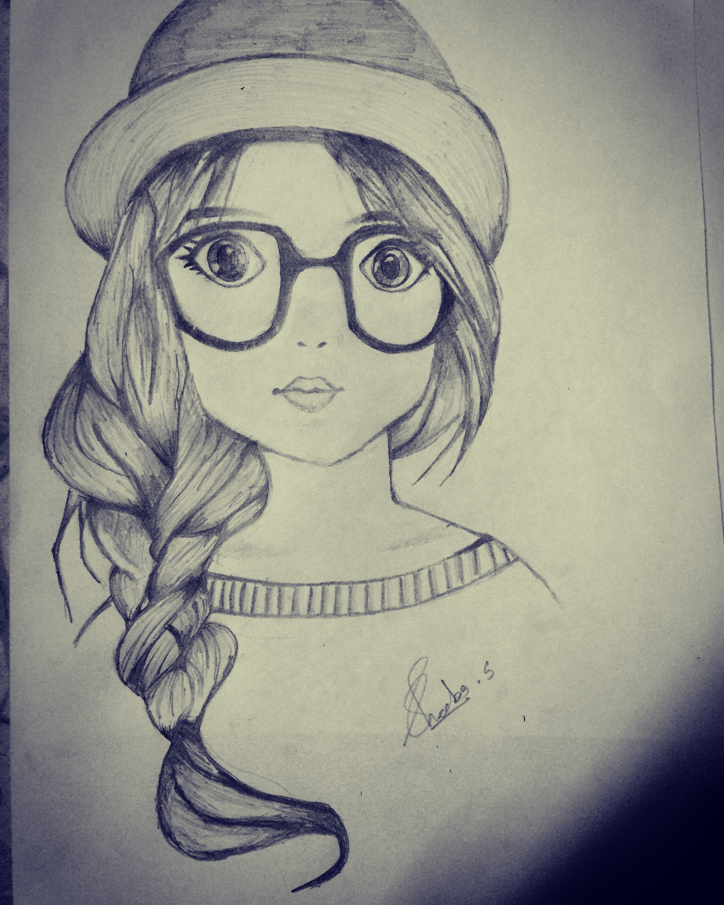

Sketching Cartoons

I think drawing is the best hobby. You can create art anywhere as long as you have two things: pencils and paper. It’s good to start at a young age because it gives you a chance to start using your brain and to be creative. Also, it is an opportunity to challenge thinking skills and develop learning skills.
Sheeba Elsi